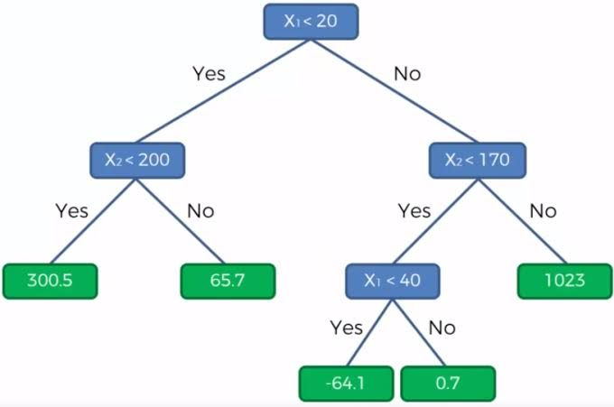
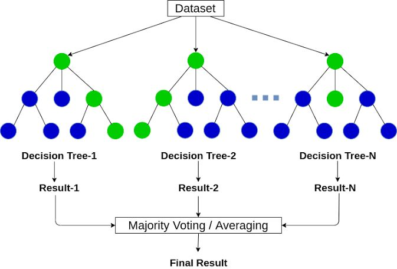

About
Information About the data
Personal health care cost data is a set of data that contains information about the costs associated with individuals' health care. This data typically contains information such as age, gender, usage history, and actual health care costs. In the context of insurance forecasting using linear regression, this data is used to create a model that can predict costs associated with health care for specific individuals. With the help of linear regression techniques, the model can analyze factors influencing healthcare costs such as age, gender, health status and associated expectations. Using this predictive model, insurers and healthcare providers can identify financial risks and plan insurance and financial estimates for insured individuals. check the data
What is scikit-learn library in Python ?
Scikit-learn is probably the most useful library for machine learning in Python. The sklearn library contains a lot of efficient tools for machine learning and statistical modeling including classification, regression, clustering and dimensionality reduction.
Key concepts and features include: Algorithmic decision-making methods, including: Classification: identifying and categorizing data based on patterns and Regression : which allows us to fit a linear model to a dataset, predict new values, and evaluate the model's performance. To use the LinearRegression class .
What is decision tree ?
Decision tree is a decision support hierarchical model that uses a tree-like model of decisions and their possible consequences, including chance event outcomes, resource costs, and utility. It is one way to display an algorithm that only contains conditional control statements..
What is Random forest regressor in python ?
Random forest is a supervised machine-learning algorithm made up of decision trees. Random Forest is used for both classification and regression problems
What is Random forest ?
Random forest regressor ( ensemble technique ) is a meta estimator that fits a number of classifying decision trees on various sub-samples of the dataset and uses averaging to improve the predictive accuracy and control over-fitting
Ensemble technique is a machine learning technique that combines the predictions from multiple models ( Decision trees ) to create a more accurate and stable prediction. It is an approach that leverages the collective intelligence of multiple models to improve the overall performance of the learning system.
Why Random forest regressor ?
it is less pron to overfitting due to its ability to randomly select different subsets of the data to train on and average out its results. Generally, Random Forest Regression is better for predicting numerical values because it offers greater accuracy and prediction stability and increases the accuracy by edit n_estimators
Column discribtion
| Column | describtion |
|---|---|
| {{column}} | {{desc}} |
Shape
- Number of columns: {{shape[1]}}
- Number of rows: {{shape[0]}}
Info About Columns
| index of columns | Column | Non_Null Count | Dtype |
|---|---|---|---|
| 0 | age | 1338 non-null | int64 |
| 1 | sex | 1338 non-null | object |
| 2 | bmi | 1338 non-null | float64 |
| 3 | Children | 1338 non-null | int64 |
| 4 | smoker | 1338 non-null | objedt |
| 5 | region | 1338 non-null | objeck |
| 6 | charges | 1338 non-null | float64 |
| Column | max | min | number of unique values |
|---|---|---|---|
| {{column}} | {{max[column]}} | {{min[column]}} | {{nunique[column]}} |
modeling
in data pocessing we used one hot encoder to transform the categorical features to numerical

by using f_regression from feature selction the best features are smoker and age
from sklearn.feature_selection import f_regression,SelectKBest
mic = SelectKBest(score_func=f_regression,k=2)
mic.fit(x,y)
feature_MI_score = pd.Series(mic.scores_,index=x.columns)
feature_MI_score.sort_values(ascending=False)
the accuracy of the model is: {{score}}